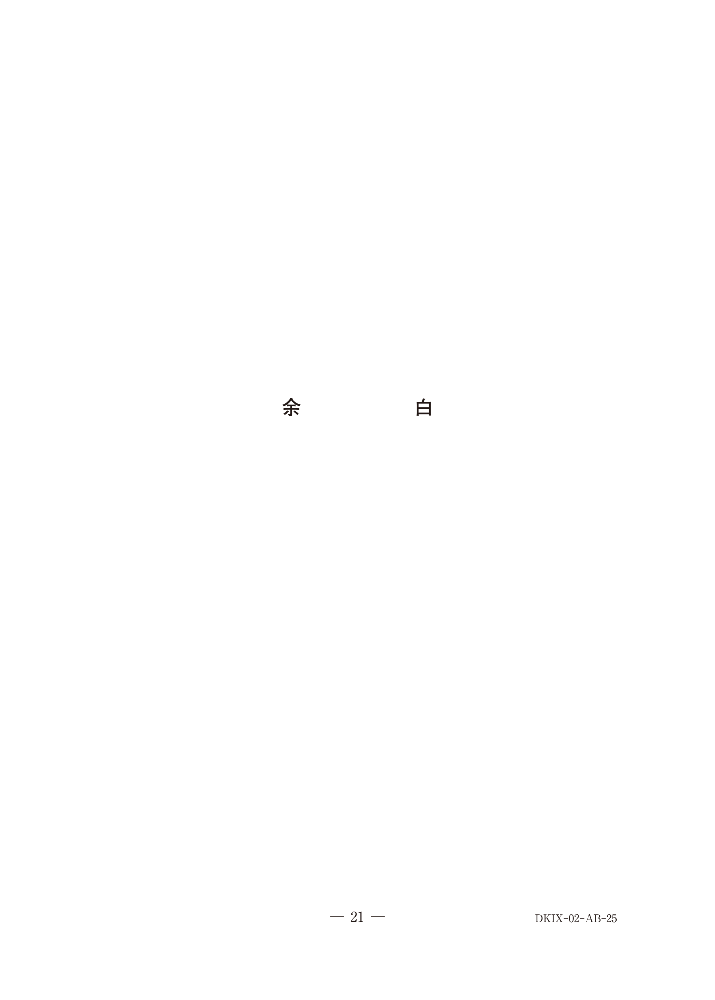

アマルガム修復
I. 歯科用アマルガムの概要
歯科用アマルガムは、銀・スズ・銅などの合金粉末と水銀を練和して作る金属修復材料である。かつては直接修復に広く使用されていたが、水俣条約（2013年）により使用が段階的に縮小されている。
アマルガムの特性
| 特性 | 内容 |
|---|---|
| 歯髄刺激性 | 刺激性なし |
| 辺縁封鎖性 | 初期は不良だが、腐食生成物により経時的に向上 |
| ガルバニー電流 | 異種金属との間でガルバニー疼痛が発生 |
| 着色 | 成分の浸透により周囲歯質が着色することがある |
窩洞形態の特徴
アマルガム修復では修復物の脆弱化を防ぐため、辺縁に厚みをもたせるリバースカーブ（逆カーブ）を付与する。
II. アマルガム修復物の取り扱い
- 問題のない修復物は研磨で対応（不必要な再修復を避ける）
- 除去が必要な場合は水銀対策を徹底する
既存アマルガム修復物への対応
長期経過したアマルガム修復物で表面の粗造感がある場合：
- 齲蝕や修復物の破折がなければ → 研磨で対応
- 歯髄に問題がなければ再修復は不要
- 安易な除去は水銀曝露のリスクを高める
60歳の男性。上顎左側第一大臼歯の修復物表面の粗造感を主訴として来院した。 45 年前に齲蝕治療のため直接修復を受けたという。エックス線検査の結果、└6 に齲蝕や修復物の破折を認めなかった。歯髄電気診で生活反応を示した。初診時の口腔内写真（別冊No.20）を別に示す。
適切な処置はどれか。1つ選べ。

b メタルインレー修復
c レジンコーティング
d コンポジットレジン修復
e フッ化ジアンミン銀塗布
【解説】45年経過したアマルガム修復物だが、齲蝕・破折なし、歯髄も生活反応を示している。問題のないアマルガム修復物は研磨で表面性状を改善すればよく、除去・再修復は不要。b〜dの再修復は過剰治療であり、eのフッ化ジアンミン銀は金属修復物には適応外。
III. アマルガム除去時の水銀対策
- ラバーダム防湿：患者の水銀曝露を防ぐ
- 口腔外バキューム：切削粉の飛散を防ぐ
- 専用容器に保管：廃棄物の適正処理
除去時の適切な対応
| 対応 | 適否 | 理由 |
|---|---|---|
| ラバーダム防湿 | ○ | 患者の口腔内への水銀・切削片の落下を防止 |
| 口腔外バキューム | ○ | 切削粉・水銀蒸気の飛散を防止 |
| 専用容器に保管 | ○ | 水銀含有廃棄物として適正に処理 |
| 非注水下で行う | × | 注水により切削熱・水銀蒸気発生を抑制 |
| 粉砕して除去 | × | 粉砕すると水銀蒸気・粉塵が増加 |
58歳の男性。上顎右側第一小臼歯と第二小臼歯の一過性の冷水痛を主訴として来院した。30年前に直接修復を受けたが、1か月前から気になっているという。検査の結果、修復物を除去後、メタルインレー修復を行うこととした。初診時のロ腔内写真（別冊No.25A）とエックス線画像（別冊No.25B）を別に示す。
修復物除去時の対応で適切なのはどれか。3つ選べ。


b 粉砕して除去する。
c ラバーダム防湿下で行う。
d 口腔外バキュームを使用する。
e 除去物を専用容器に保管する。
【解説】アマルガム除去時は水銀曝露対策が必須。ラバーダム防湿で患者を保護し、口腔外バキュームで飛散を防ぎ、除去物は専用容器で保管して適正廃棄する。aの非注水は切削熱で水銀蒸気が発生するため不適切。bの粉砕も水銀蒸気・粉塵が増えるため不適切。
IV. 水俣条約と歯科用アマルガム
水俣条約（水銀に関する水俣条約、2013年採択）により、歯科用アマルガムの使用削減が国際的に求められている。
条約で定められた措置
- アマルガム使用の段階的削減
- 代替材料（コンポジットレジン等）の使用促進
- 水銀廃棄物の適正管理
※現在の国試では「アマルガムの新規使用」ではなく「既存アマルガムの取り扱い」が出題の中心となっている。